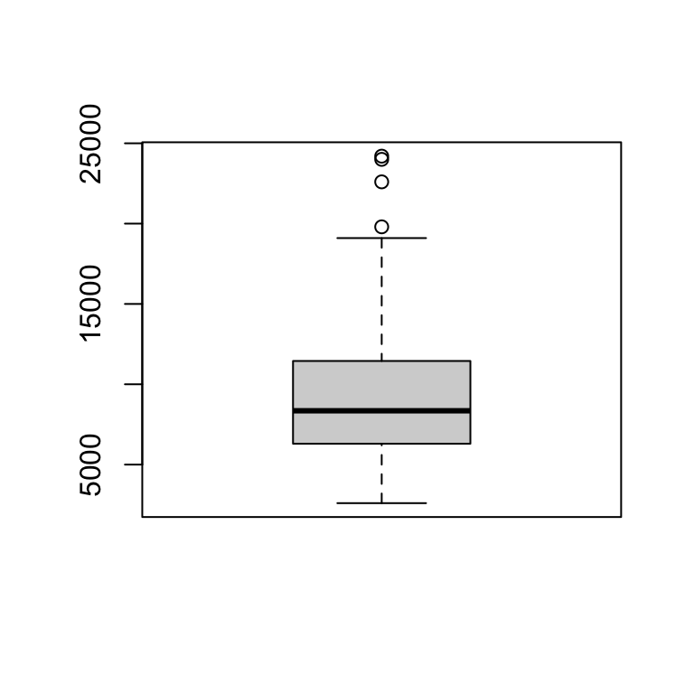

set.seed(123)
ingresos <- round(rlnorm(100, meanlog = 9, sdlog = 0.5), -2)
boxplot(ingresos)
Nombre
Invalid Date
Se puede usar letras cursivas, o en negritas. Se puede referenciar gráficas o tablas, como se muestra en Figura 2 o en Cuadro 1.
Expresiones en LaTeX como:
\[ \mu_j\mid \mathbf x, z \sim N\left( \frac{B}{A}, \frac{\sigma^2}{A} \right) \] O varias alineadas:
\[ \begin{aligned} \alpha &\sim \mathcal{U}(0,0.1) \\ \beta&\sim \mathcal{U}(0,0.1) \\ \gamma &\sim \mathcal{U}(0, 0.2) \\ \delta &\sim \mathcal{U}(0, 1) \end{aligned} \]
En lugar de mostrar un df así:
ID Sexo Edad Escolaridad Ingresos Estado_Civil
1 1 Hombre 34 Posgrado 13700 Casado/a
2 2 Mujer 6 Posgrado 4800 Soltero/a
3 3 Hombre 35 Preparatoria 4300 Casado/a
4 4 Hombre 34 Secundaria 41000 Divorciado/a
5 5 Hombre 16 Posgrado 6600 Soltero/aSe puede mejorar la presentación así:
| ID | Sexo | Edad | Escolaridad | Ingresos | Estado_Civil |
|---|---|---|---|---|---|
| 1 | Hombre | 34 | Posgrado | 13700 | Casado/a |
| 2 | Mujer | 6 | Posgrado | 4800 | Soltero/a |
| 3 | Hombre | 35 | Preparatoria | 4300 | Casado/a |
| 4 | Hombre | 34 | Secundaria | 41000 | Divorciado/a |
| 5 | Hombre | 16 | Posgrado | 6600 | Soltero/a |